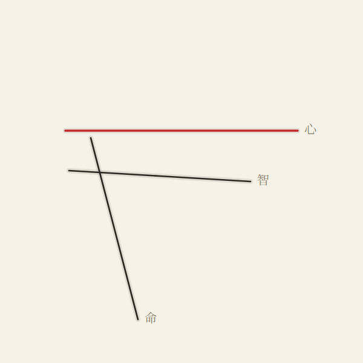
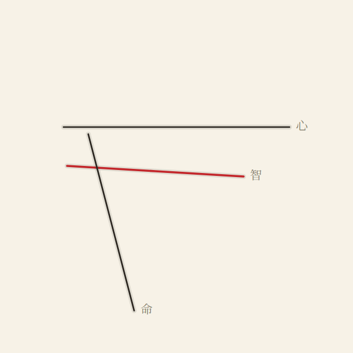
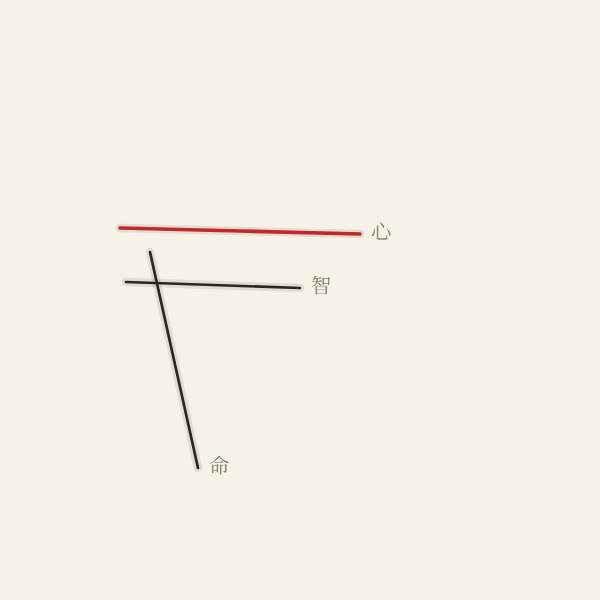
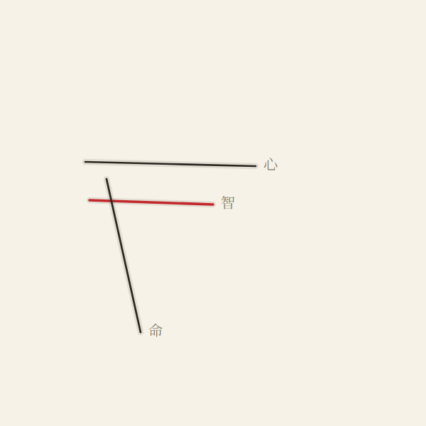
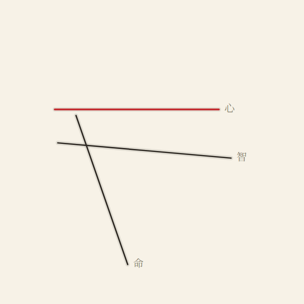
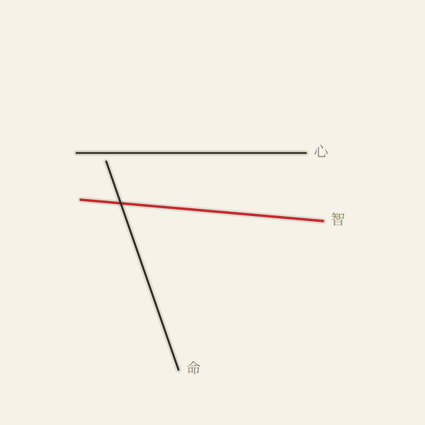

P6.T2 — palm line-diagram renderer (engraved ink · per-line cinnabar highlight · 心智命运 labels)

palm_01 — hero (心 + 运 cinnabar)
palm_01 — section: 智 head highlighted
palm_02 — hero (心 + 运 cinnabar)
palm_02 — section: 智 head highlighted
palm_03 — hero (心 + 运 cinnabar)
palm_03 — section: 智 head highlighted